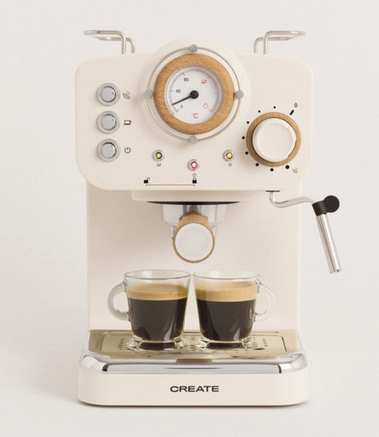
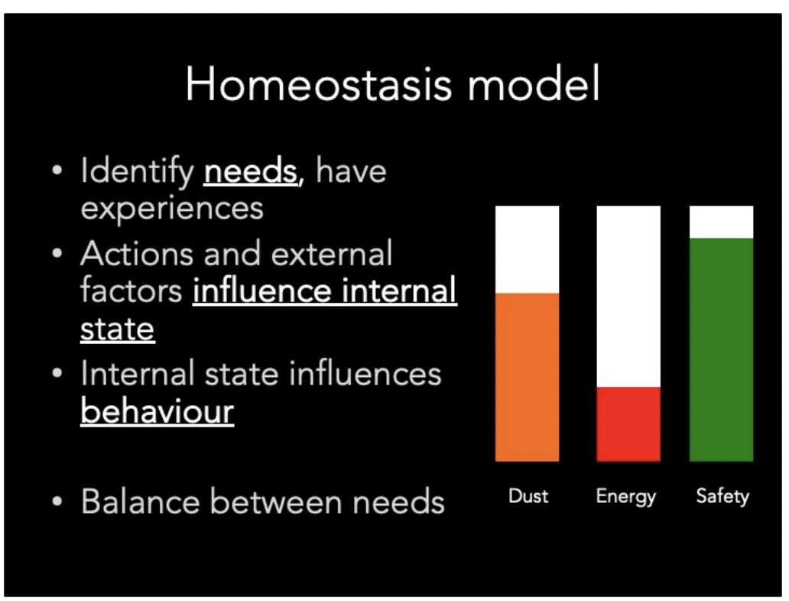
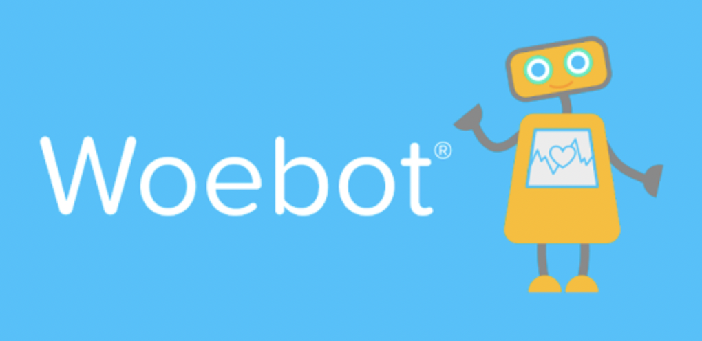
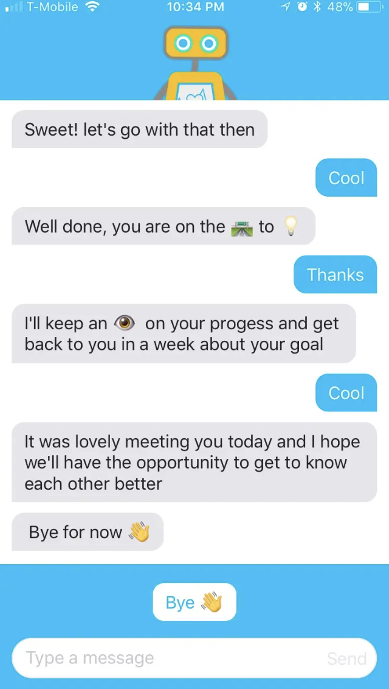

Thought Experiment: Applying a Homeostasis Model to a Device
Device: Coffee Maker

Description: A coffeemaker’s primary function is to make coffee. In order to fulfill its function, it has needs for a steady supply of coffee beans, water, electricity and cleanliness.
Actions and external stimuli influence the internal state: When electricity supply is turned on, the need to be energised is fulfilled in the sense that the coffee machine is ready to function and receive instructions that would lead towards coffee making. When people refill coffee beans, the need for coffee beans is satisfied in the sense that the machine has something to grind and make a progressive step on its way to fulfill the funtion of coffee making. When water is filled into the system, the need for water is satisfied in the sense that water can be poured and mixed with grind coffee beans to brew actual coffee, which is one more step ahead along the process.
Examples of how the device then "feels" at different states of its needs and how that influences its behaviour:
When water amount runs low, coffee machine feels thirsty; When coffee beans amount runs low, it feels hungry. In these situations, machine will give an audio warning system message with red and blue emoji signals to communicate and specify its needs and stop executing coffee making instructions;
When electricity not connected, the machine feels tired and will send out a sleeping/ low energy battery signal in red.
When not been cleaned over a period of time, machine feels dirty, and send out a cleaning signal that warns users to run the clean every time its used, and only disappears when user finally run the cleaning program. It will send out blinking audio sounds and happy emoji visual expression that indicate its satisfaction. When having served coffee, the machine feel happy and give a short message of self love and positivity to its user.

Research on AI Woebot App

- Woebot
Artist/maker/company: Woebot Labs Inc
Description: Trained with Cognitive Behavioural Therapy (CBT) therapy frameworks, Woebot is a chatbot in an app that help users think through daily to day life situations with bite sized, step by step guidance.
URL: [https://woebothealth.com/](https://woebothealth.com/)
What the project entails and why it is considered an artificial creature:
The project offers users the option of day to day communication exchanges with the AI, users will Master skills to reduce stress, anxiety and depressive symptoms, without the constraints of time and locations. Exchange, encrypt, decode and receive messages which is a natural characteristics of human communication behaviours. Woebot is an artificial creature because it is a man-made system that detects(check in with users’ mood) and interpret and formulate meaning from dialogue with users and respond in a way that demonstrate communication like human. By learn from users, the creature is also able to solve problems on its own.

In terms of technology, Woebot is powered by Natural language processing and artificial intelligence. Based on user’s responses, the chatbot determine an optimal reply based on a combination of algorithms, including natural language processing (NLP) and natural language understanding (NLU) systems.
What I found impressive about this project is its proven positive impact on the topic of mental health, which is a field that I’m passionate about. people without access to therapy are restricted by financial resources, time or location. It also fills the needs to retrain, rewire the mental patterns of people in devastated and vulnerable states and yet does not want to disclose their conditions, or do not have unbiased, supportive people around them with sufficient training and expertise to handle the situation and emotions correctly. For example, a lot of patients tend to hide away from people due to their depressive or suicidal conditions and would not like to reveal such information to others. A bot can be an easier and more reliable option to communicate with than humans for them.
Reflection on Artificial Intelligence
While this topic introduces about man-made systems of intelligence, its content brought me into questioning the condition and meaning of existence and consciousness as a human myself. What makes a human human and what makes a robot remain robot? if a robot acts indefinitely like a human, would it be considered human? If a body is not part of my existence, does that mean my consciousness could as well be uploaded into a cloud and last forever?
In future, I can see artificial intelligence being applied in the realm of smart home and assist every aspects of services we encounter. One example is robot helpers can help analyse and monitor the physical and mental health condition of elderlies or busy professionals who live alone, communicate with them, arrange prescribed medicine and prepare daily meals to help satisfy one’s physical and emotional needs. I can see them communicating more naturally with evolving outlook that ether resembles human or are completely distinctive from them, to replacing many customer facing or communication/tertiary service related positions in companies and to assist governors in solving complex problem, or allocating resources to different industrial departments in combination with the use of big data.
This subject has met my expectations in the sense that I gained a deeper understanding about its mechanism and real life applications, it also recommended a few interesting movies and Ted-talks that has broaden my horizon.